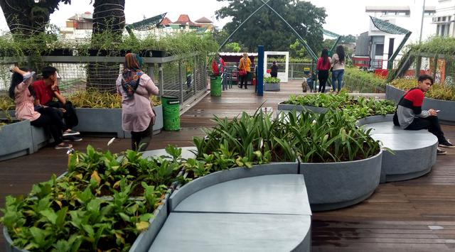

Lokasi Tempat Teras Cihameplas
Selamat datang di Teras Cihampelas atau Skywalk Cihampelas Bandung , tempat yang akan berikan anda alternatif tempat wisata di bandung dengan konsep baru dan akan berikan anda pengalaman wisata luar biasa, di tempat yang berlokasi di Jalan Cihampelas Kota Bandung ini.

Sejarah Teras Cihampelas
Teras (Skywalk) Cihampelas Bandung ini dikerjakan oleh kontraktor PT Likatama Graha Mandiri, dengan menghabiskan anggaran pembangunan sekitar 48 milyar. Pembangunan Skywalk Cihampelas Bandung ini sudah diwacanakan sejak 2014 yang lalu dan seharusnya ditargetkan selesai di tahun 2016 yang lalu, namun dengan terkendala berbagai halangan, salah satu megaproyek pemerintahan kota Bandung ini pun akhirnya rampung dan diresmikan di awal tahun 2017 yang baru lalu. Panjang kawasan Skywalk Cihampelas Bandung nsediri adalah 450 meter, dengan lebar jalan mencapai 9 meter serta tinggi dari permukaan jalan sekitar 4,6 meter, dengan bahan konstruksi rangka dari baja jenis H-Beam dan beton di bagian lantai, dengan alas granit dan kayu.

Fungsi Skywalk Cihampelas

Setelah sukses dengan berbagai proyek dengan tujuan mengembalikan kota Bandung sebagai ” Kota Kembang ” dan juga ” Paris Van Java “, sebuah kota yang nyaman ditinggali oleh warganya dan nyaman dikunjungi oleh pelancong, walikota bandung Kang Emil sepertinya tidak lelah untuk terus berinovasi. Setelah sukses merevitalisasi sejumlah Taman di Kota Bandung sebagai ruang publik hijau seperti dibangunnya tempat wisata di pinggir sungai Teras Cikapundung, Lapangan Tegalega kemudian Taman Lansia, Taman Jomblo, Taman Film , Peta Park Bandung hingga Alun-Alun Kota Bandung di sekitar Masjid Raya Bandung, maka dilanjutkan inovasi lainnya membangun Teras Cihampelas ini. Skywalk Cihampelas sendiri dibangun dengan tujuan, selain sebagai bagian rencana besar tata kelola ruangan di kota Bandung untuk semakin tertaata dan tertib, juga difungsikan sebagai area jalur pejalan kaki, serta lokasi penertiban sekaligus penampungan sejumlah Pedagang Kaki Lima (PKL) yang selama ini menempati sepanjang jalur wisata belanja di jalan Cihampelas. Dengannya maka kehadiran jembatan di atas jalan Cihampelas ini akan mengurangi penumpukan kendaraan di kawasan cihampelas yang selama ini dikenal macet, sehingga pengunjung yang membawa kendaraan bisa memarkirkannya di jalan Tamansari, kemudian berjalan melalui Skywalk ini untuk berwisata di jalan Cihampelas. Sehingga olehnya, para pejalan kaki bisa berjalan dengan aman dan nyaman dan kendaraan pun bisa anda diparkir di tempat yang aman serta kendaraan yang melintas pun bisa melaju tanpa tersendat oleh pejalan yang lalu lalang dan menyeberang serta para pedagang di atas trotoar jalan lagi.
Daya Tarik Wisata Skywalk Cihampelas
1. Ikon Baru Wisata Kota Bandung
Kehadiran dari Teras Cihampelas atau Skywalk Cihampelas ini telah menjadikannya sebagai salah satu dari Ikon Pariwisata Kota Bandung yang baru, selain karena konsep dan Design tempat Skywalk seperti ini baru pertama di indonesia.
2. Green Konsep Area
Di sini pengunjung tidak perlu khawatir kulitnya terbakar oleh matahari, sebab sepanjang jembatan ini anda akan melihat dan terlindungi dengan rimbunnya pohon-pohon yang berdiri di sepanjang jalan ini, Di atas jembatan dibangun jalur-jalur hijau.
3. Tempat Pedagang Kaki Lima Bandung
Di sini terdapat tidak kurang dari 192 lapak PKL yang tertata sedemikian rupa di tahap pertama dan ke depannya, menurut Ridwan Kamil akan kembali dilanjutkan dengan program penempatan Pedagang Kaki lima di jilid 2 Skywalk Cihampelas.
ALAMAT SKYWALK CIHAMPELAS BANDUNG
Jalan Cihampelas No 123-131, Cipaganti, Coblong, Kota Bandung Jawa Barat 40131, Indonesia
See LocationJAM BUKA SKYWALK CIHAMPELAS BANDUNG
Waktu operasional Teras Cihampelas ini adalah setiap hari, Senin Hingga Minggu, mulai Pukul 08.00 – 22.00 WIB
HARGA TIKET MASUK SKYWALK CIHAMPELAS BANDUNG
Ini adalah kawasan bebas atau tempat yang disediakan untuk kenyamanan warga kota bandung dan juga pengunjung lain sehingga GRATIS.
Fasilitas Wisata Skywalk Cihampelas
Berbicara seputar fasilitas wisata yang bisa anda nikmati selama jalan-jalan di Teras Cihampelas ini, maka secara umum tempat ini dibagi ke dalam 3 zona. Zona tersebut adalah area Taman Bunga, kemudian toko souvenir seperti tempat jualan kaos dan berbagai macam pernak-pernik khas kota bandung serta tentunya tempat wisata kuliner yang menjajakan aneka menu hidangan, mulai dari makanan khas bandung, Jawa Barat dan nusantara bahkan ke depan bisa jadi mancanegara. Untuk lebih memberikan kenyamanan dan keamanan bagi pengunjung, Skywalk Cihampelas Bandung ini pun telah dilengkapi fasilitas Pos Satuan Pengamanan ( Satpam ), kemudian juga Toilet Umum,Mushola serta bagi wisatawan tersedia pos informasi, hingga Lift bagi pengunjung diabilitas pun telah disediakan. Berkunjung ke sini, anda bisa melakukan banyak hal atau kegiatan yang asyik berbeda dengan jalan pada umumnya, mulai dari jalan-jalan, berfoto, makan dan yang lainnya, tanpa anda khawatir diserempet oleh kendaraan lagi.